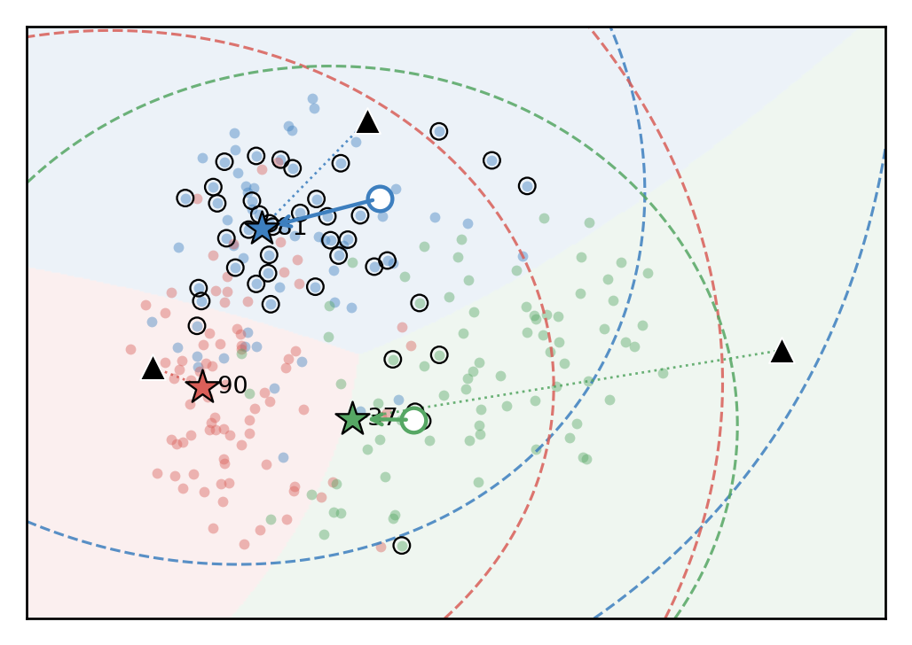

When Neural Collapse Fails to Route
Routing drift in continual learning, and a lightweight reliability-calibrated correction for progressive ETF classifiers.

Routing drift separates two phenomena that a single Class-IL number mixes: task-local discrimination can remain high while global task-block routing collapses.
Abstract
Progressive neural-collapse classifiers can learn strong task-local decision boundaries while failing the global Class-IL decision. We identify the failure as routing drift: under an expanding equiangular tight frame (ETF) classifier, a held-out sample can remain separable within its true task block, yet receive its largest global score from another block.
We develop Reliability-Calibrated Routing (RCR), a lightweight post-hoc classifier that keeps the trained backbone and ETF frame fixed while composing standardized ETF alignment with radial plausibility around transported, NC-shrunk class representatives. Across three datasets and two fixed replay-buffer budgets, RCR gives the best Class-IL FAA on five of six settings and reduces Class-IL forgetting on all six.
Core Idea
1. Measure routing
Route accuracy asks whether the global argmax falls inside the correct task block. It is a diagnostic read from the classifier, not a learned task oracle.
2. Transport class evidence
Class representatives are moved into the current feature frame, following the observed feature drift instead of comparing all classes in stale coordinates.
3. Calibrate reliability
RCR combines the global ETF score with local radial plausibility, so a class wins only when it is both globally aligned and locally plausible.
At the neural-collapse ideal, transported representatives coincide with ETF vertices and RCR reduces to the normalized nearest-ETF classifier. RCR changes decisions when progressive neural collapse is imperfect.
Main Results
On the same frozen checkpoints, RCR improves Class-IL and route accuracy together while preserving Task-IL performance. The table reports three-seed averages for buffer size 200.
What RCR Changes

Replay can be too clean: stored samples remain well routed while held-out test samples expose routing drift.

RCR adds local radial reliability around transported class evidence while retaining the global ETF frame.
Paper and Artifacts
The camera-ready paper and supplementary material are mirrored here for convenience. The GitHub repository will also host the evaluation scripts and generated artifacts used by the paper.
Citation
@inproceedings{larue2026rcr,
title = {When Neural Collapse Fails to Route: Routing Drift in Continual Learning},
author = {Larue, Nicolas},
booktitle = {British Machine Vision Conference (BMVC)},
year = {2026},
url = {https://towzeur.github.io/RCR/}
}